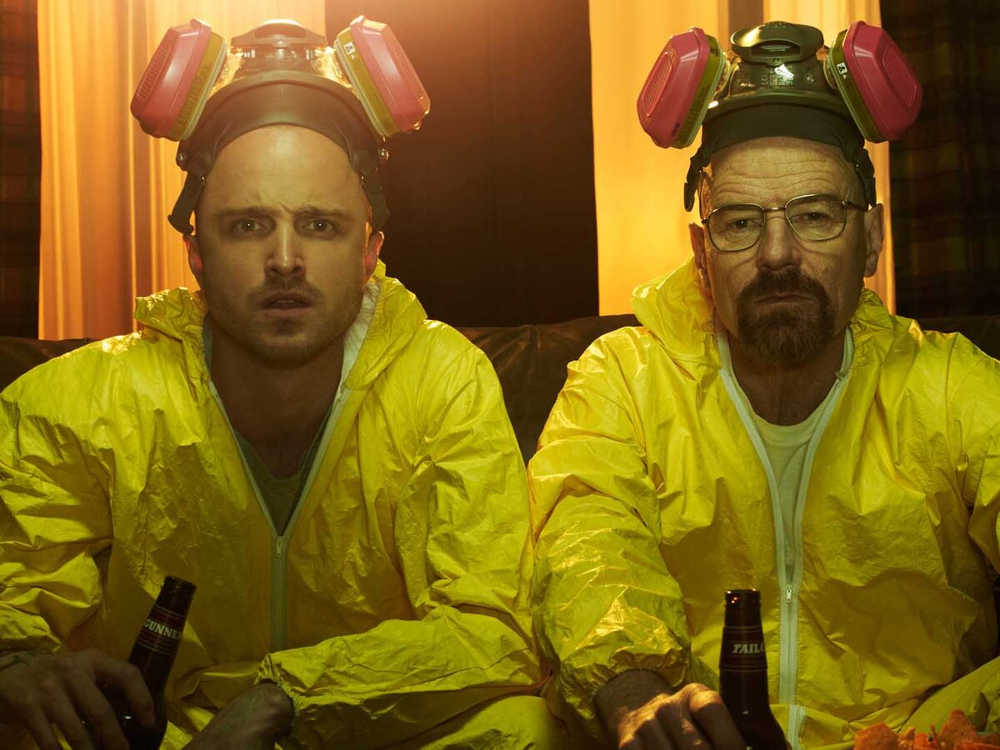
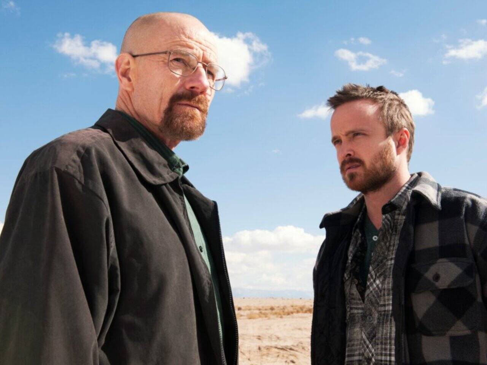
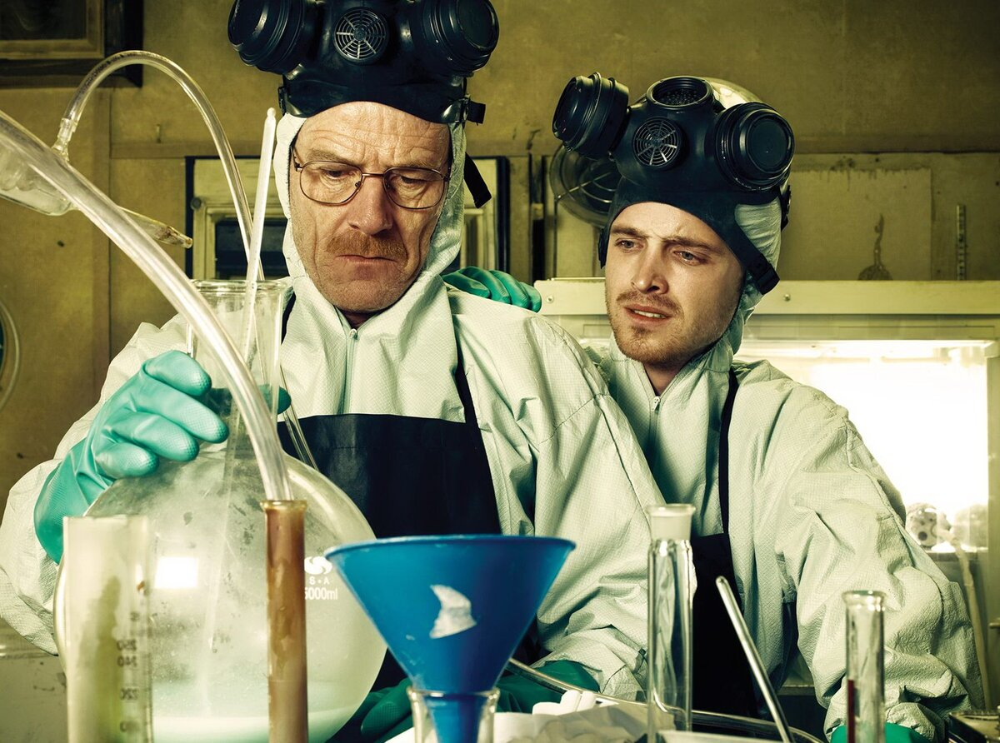

×


9.8
Добавить в избранное
Во все тяжкие
Режиссеры Мишель Макларен, Адам Бернштейн
Актеры Брайан Крэнстон, Анна Ганн, Аарон Пол, Дин Норрис, Бетси Брандт, АрДжей Митти, Боб Оденкёрк и другие
Года выхода: 2008-2012
Количество сезонов: 5
Количество серий: 287
Среднее время серии 50 минут
Среднее число серий в сезоне 20
Уолтер Уайт – пятидесятилетний учитель, преподающего химию в средней школе. Денег у Уолтера в обрез. Свояк Уайта строит карьеру в
Управлении по борьбе с наркотиками и однажды предлагает главному герою принять участие в облаве наркодиллера.
Во время облавы мистер Уайт узнает в преступнике своего бывшего ученика. Вместо того, чтобы сдать правонарушителя в
руки властям, Уолтер заключает с ним пари, согласно которому они вместе начинают изготавливать метамфетамин, в надежде
поднять своё финансовое положение.
Галерея сериала «Во все тяжкие»



Комментарий к сериалу «Во все тяжкие»
Интересный сериал, закрученный сюжет
Проект перевернул телевидение, культовый сериал, рекомендую посмотерть каждому